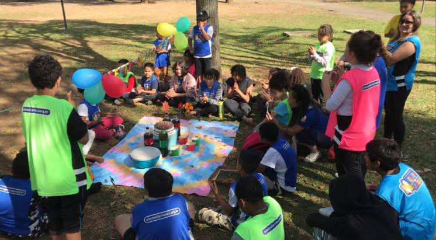
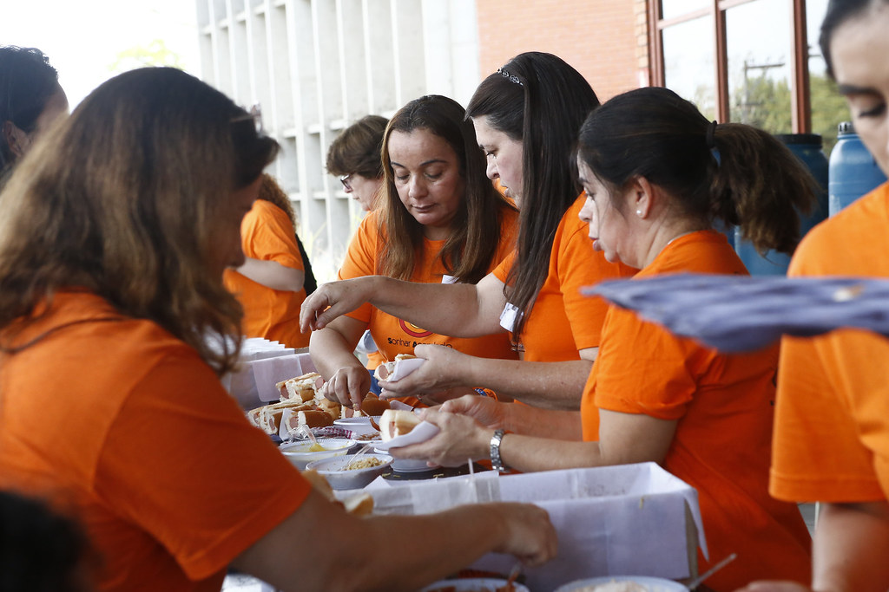

LAR - Lugar de Apoio e Recomeço
A LAR é uma organização não governamental voltada ao acolhimento, cuidado e desenvolvimento de crianças e adolescentes em situação de vulnerabilidade.
O propósito da organização é oferecer um ambiente seguro, estruturado e acolhedor para aqueles que precisam de proteção e acompanhamento, respeitando suas histórias, necessidades e individualidades.
Mais do que oferecer acolhimento, a LAR busca contribuir para que cada criança e adolescente tenha acesso a oportunidades de desenvolvimento, descubra suas habilidades e possa construir novas perspectivas para o futuro.
Por meio do cuidado, do acompanhamento psicológico, da orientação e de atividades voltadas ao desenvolvimento pessoal e profissional, buscamos transformar o acolhimento em um ponto de partida para novos caminhos.
Um espaço para acolher e recomeçar



